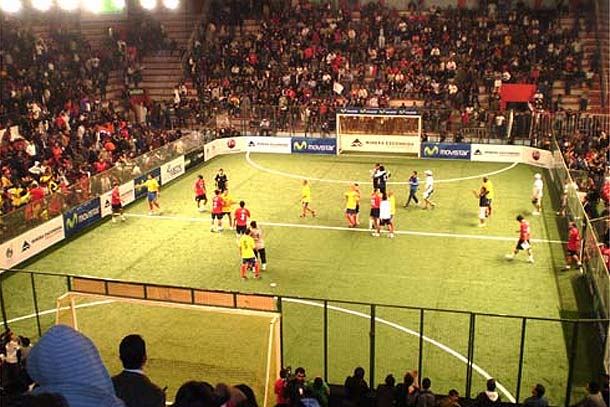

Fútbol
Es un deporte que se practica entre dos equipos de once jugadores que tratan de introducir un balón en la portería del contrario impulsándolo con los pies, la cabeza o cualquier parte del cuerpo excepto las manos y los brazos; en cada equipo hay un portero, que puede tocar el balón con las manos, aunque solamente dentro del área; vence el equipo que logra más goles durante los 90 minutos que dura el encuentro.
El fútbol se juega siguiendo una serie de reglas, llamadas oficialmente reglas de juego. Este deporte se practica con una pelota esférica (de cuero u otro material con una circunferencia no mayor a 70 cm y no inferior a 68 cm, y un peso no superior a 450 g y no inferior a 410 g al comienzo del partido), donde dos equipos de once jugadores cada uno (diez jugadores "de campo" y un guardameta) compiten por encajar la misma en la portería rival, marcando así un gol. El equipo que más goles haya marcado al final del partido es el ganador; si ambos equipos no marcan, o marcan la misma cantidad de goles, entonces se declara un empate. Puede haber excepciones a esta regla; véase Duración y resultado más abajo.
La regla principal es que los jugadores, excepto los guardametas, no pueden tocar intencionalmente la pelota con sus brazos o manos durante el juego, aunque deben usar sus manos para los saques de banda.
En un juego típico, los jugadores intentan llevar la pelota hasta la portería rival, lo que se denomina gol, a través del control individual de la misma, conocido como regate, o de pases a compañeros o tiros a la portería, la cual está protegida por un guardameta. Los jugadores rivales intentan recuperar el control de la pelota interceptando los pases o quitándole la pelota al jugador que la lleva; sin embargo, el contacto físico está limitado. El juego en el fútbol fluye libremente, y se detiene solamente cuando la pelota sale del terreno de juego o cuando el árbitro decide que debe detenerse. Luego de cada pausa, se reinicia el juego con una jugada específica. Al final del partido, el árbitro compensa el tiempo total en minutos que se suspendió el juego en diferentes momentos.

Posición táctica de los jugadores
Guardameta, arquero o portero
El guardameta, también conocido como portero, arquero o golero, es el jugador cuyo principal objetivo es evitar que la pelota entre a su meta durante el juego, acto conocido como gol. El guardameta es el único jugador que puede tocar la pelota con las manos durante el juego activo, aunque solo dentro de su propia área. Cada equipo debe presentar un único guardameta en su alineación. En caso de que el jugador deba abandonar el terreno de juego por cualquier motivo, deberá ser sustituido por otro futbolista, ya sea uno que se encuentre jugando o un sustituto. Este tipo de jugadores deben llevar una vestimenta diferente a la de sus compañeros, sus rivales (incluido el guardameta) y el cuerpo arbitral. Por lo general suelen llevar el número 1 estampado sobre la camiseta.
Defensa
El defensa, también conocido como defensor, es el jugador ubicado una línea delante del guardameta y una por detrás de los centrocampistas, cuyo principal objetivo es detener los ataques del equipo rival. Generalmente esta línea de jugadores se encuentra en forma arqueada, quedando algunos defensas más cerca del guardameta que los demás. Si es solo un jugador el ubicado más atrás, recibe el nombre de líbero; si son dos o más, reciben el nombre de zagueros. Los defensores posicionados en los costados del terreno son llamados laterales o stoppers (en el caso de que haya un líbero), y debido a su colocación (más cerca de los centrocampistas) estos pueden avanzar más en el terreno si lo desean. Para nombrarlos se agrega la zona a la palabra defensa: por ejemplo, un defensa que juega por la derecha (mirando hacia la meta rival) sería un lateral derecho. También el arquero debe proteger y dar instrucciones a los defensas.
Centrocampista
El centrocampista, mediocampista o volante es la persona que juega en el mediocampo en un campo de fútbol. Entre sus funciones se encuentran las de recuperar balones, propiciar la creación de jugadas y explotar el juego ofensivo. De acuerdo a estas funciones podemos distinguir: los volantes carrileros (los que juegan más cerca de la línea de banda); los de contención, que juegan casi a la misma altura que los defensores laterales para contribuir a la defensa y pueden ser uno o dos jugadores (el apodo de "Cinco" que se da a estos jugadores se debe a que es el número que suelen llevar en la camiseta); y los de creación o enganches, que se sitúan entre la línea de los carrileros y delanteros (son el cerebro del ataque y se caracterizan por su habilidad).
Delantero
Un delantero o atacante es un jugador de un equipo de fútbol que se destaca en la posición de ataque, la más cercana a la portería del equipo rival, y es por ello el principal responsable de marcar los goles. Es muy importante estar en movimiento y buscar siempre pase, es decir, desmarcarse para que le sea más fácil al que lleva la pelota pasársela. La velocidad es esencial.
Actividad física
El fútbol incluye una actividad física muy importante. Durante un partido de fútbol profesional de 90 minutos, un jugador, dependiendo de su posición y de las dimensiones del campo, recorre entre 12 y 15 km. También durante un partido de similares características, un futbolista pierde alrededor de 2 kg de líquidos, parte de los cuales son recuperados durante el tiempo de descanso.11 En partidos que se juegan con altas temperaturas, los árbitros tienen el derecho de detener el encuentro, generalmente a mediados de un período, para que los jugadores y el cuerpo arbitral se hidraten.12
Pero al mismo tiempo, el fútbol es uno de los deportes con mayor número de lesiones,13 aunque la mayoría de ellas no son de gravedad. Las lesiones más comunes ocurren en las rodillas y los tobillos, debido a los movimientos rotativos a los que son sometidos. Las roturas de meniscos y ligamentos cruzados junto a los desgarros musculares, son lesiones habituales dentro del fútbol. Las probabilidades de lesión aumentan cuando el jugador no recibe una preparación física adecuada, particularmente en un deportista aficionado, y cuando el juego se desarrolla sobre un terreno irregular. Para futbolistas profesionales o semiprofesionales es de vital importancia la presencia de un preparador físico que regule el tipo de ejercicio físico, así como la duración y regularidad del mismo. El trabajo del preparador físico se debe complementar con una correcta alimentación, donde también es recomendable la presencia de un profesional en la materia
Recepción
Los jugadores de fútbol deben ser capaces de controlar los balones que reciben. La forma más fácil suele ser parar la pelota; en este caso, el balón debería ser situado en la posición ideal para el próximo toque. Los jugadores avanzados pueden usar el primer toque para hacer que el balón se mueva de forma rápida hacia donde tienen planeado correr. También pueden utilizar el primer toque para pasar el balón. Evitar el balón en vez de recibirlo puede despistar a los jugadores oponentes.
Es una acción muy utilizada durante un partido, con el objetivo de recibir el balón, controlarlo y ponerlo a su servicio para desarrollar en buenas condiciones una acción posterior. La recepción en parada es aquella en la que se consigue controlar totalmente el balón en los pies, perdiendo el componente de velocidad pero aumentando la precisión en el manejo posterior del esférico.
La recepción en semiparada es para conseguir que el balón pierda parte de su valor inicial. La recepción de amortiguamiento se utiliza para controlar balones aéreos, con trayectoria descendente, y se produce una amortiguación de la aceleración con el que llega la pelota.
El control del balón puede ser al ras de suelo, o bien con la cara interna de la bota, o con la planta del pie, con la punta hacia arriba y encajando la pelota entre la planta y el suelo. En los balones altos, se debe conseguir llevar el balón al suelo con posibilidades de ser jugado adecuadamente.
Pase
Para mantener la posesión del balón es esencial tener capacidad para pasarlo en corto entre los jugadores cercanos de forma precisa y a tiempo. Los pases largos precisos permiten una mayor variedad de situaciones y un juego más directo. Generalmente, los pases que crean ocasiones de gol se les llama asistencia, aunque cualquier jugador en el campo podría hacer este tipo de jugadas, generalmente es un mediocampista ofensivo quien lo hace, es trabajo usual de los jugadores marcados con el 10 o el 8 en sus camisetas.
Tiro
Los jugadores deben tener un equilibrio a la hora de tirar a puerta: ni hacerlo en demasiadas ocasiones ni tampoco dejar de intentarlo cuando tienen ocasión. Los tiros deberían ser precisos y potentes, aunque generalmente no se logra esta precisión y potencia al mismo tiempo. Elegir precisión o potencia depende de la situación y de las características del jugador.
La elección del lugar de la portería al cual disparar es un tema controvertido y depende de cuántos jugadores estén cubriéndola. Cuando el jugador encara solo al guardameta, los tiros deberían situarse cerca de uno de los postes. De forma ideal, el tiro debería ir dirigido a la escuadra, pero es menos difícil y también efectivo hacerlo a ras de suelo. Cuando el guardameta está demasiado adelantado, se puede intentar un globo.
Popularidad
Según una encuesta realizada por la FIFA en el año 2006,4 aproximadamente 270 millones de personas en el mundo están activamente involucradas en el fútbol, incluyendo a futbolistas, árbitros y directivos. De estas, 265 millones juegan al fútbol regularmente de manera profesional, semi-profesional o amateur, considerando tanto a hombres, mujeres, jóvenes y niños. Dicha cifra representa alrededor del 4 % de la población mundial. La confederación con mayor porcentaje de personas activamente involucradas con el fútbol es la Concacaf, con el 8,53 % de la población. Su contraparte se da en la zona de la AFC, donde el porcentaje es de solo un 2,22 %. La UEFA tiene un porcentaje de participación del 7,59 %; la CONMEBOL de 7,47 %; la OFC de 4,68 %; y la Confederación Africana de Fútbol del 5,16 %. Existen más de 1,7 millones de equipos en el mundo y aproximadamente 301 000 clubes
El país con más futbolistas que se desempeñan regularmente (excepto niños) es China, que posee 26,1 millones de futbolistas. Lo siguen: Estados Unidos (24,4 millones), India (20,5), Alemania (16,3), Brasil (13,1), Colombia (9,2) y México (8,4). Por otro lado, las Federaciones con menor cantidad de futbolistas regulares (excepto niños) son Montserrat, con 300 futbolistas, las Islas Vírgenes Británicas (658), Anguila (760) y las Islas Turcas y Caicos (950).
Fútbol femenino
El fútbol femenino ha tenido un crecimiento lento en el fútbol moderno, principalmente por obstáculos sociales y culturales que no permiten el ingreso pleno de la mujer al deporte.49 El primer encuentro femenino bajo las reglas del fútbol asociación del cual se tienen registros sucedió en 1892 en Glasgow, Escocia.50 A finales de 1921 el fútbol femenino fue prohibido en Inglaterra, hecho que no le permitió expandirse al resto del mundo. En 1969 el fútbol femenino se volvió a organizar en Inglaterra, motivo por el cual comenzó a expandirse fuera de su territorio. El primer encuentro internacional de selecciones de fútbol femenino ocurrió en 1972, casualmente 100 años después del primer encuentro masculino, donde Inglaterra venció a Escocia por 3 a 2. Los primeros torneos mundiales comenzaron a disputarse en los años 1990: la Copa Mundial Femenina de Fútbol a partir de 1991 y como deporte de los Juegos Olímpicos desde 1996.
Según una encuesta realizada por la FIFA, existen alrededor de 26 millones de jugadoras en el mundo. En promedio, por cada 10 futbolistas (de ambos sexos) existe una mujer futbolista en el mundo.4
Economía
Según estimaciones de la FIFA, durante el período 2003-2006 dicho organismo tuvo ingresos por 3238 millones de francos suizos (CHF)52 y gastos por 2422 millones de CHF, lo cual da un superávit de 816 millones de CHF. El 92 % (2986 millones de CHF) de los ingresos están relacionados con las competiciones internacionales, particularmente la retransmisión por televisión de la Copa Mundial de Fútbol de 2006, que comprende 1660 millones de CHF de ese valor. El resto de los ingresos se dividen en partes iguales entre ingresos financieros y otros ingresos de explotación.
Del total de los ingresos, 714 millones de CHF se consiguen por concepto de derechos de merchandising. Muchos de estos ingresos se dan en puntos de venta en los alrededores de los estadios de la Copa Mundial de Fútbol. En cuanto a los gastos, el 69 % (1682 millones de CHF) de los mismos están dedicados a la organización de campeonatos y al desarrollo del deporte: un 46 % de los gastos totales (1.125 millones de CHF) y un 23 % (557 millones de CHF) respectivamente. El 26 % (622 millones de CHF) se dedicó a gastos operativos, como lo son el transporte, alquileres, gastos jurídicos, comunicaciones, entre otros. El otro 5 % (118 millones de CHF) corre por efectos del cambio de divisas e intereses.
Los presupuestos de los clubes de fútbol se pueden encontrar en diferentes valores dependiendo de la zona del mundo donde se encuentren. Los mayores presupuestos se pueden encontrar en Europa, particularmente en las principales ligas de Alemania, España, Italia e Inglaterra. En gran parte de América del Sur los mayores ingresos se deben a la transferencia de jugadores a las ligas europeas, los fondos aportados por las transmisiones de la televisión y la publicidad en las camisetas. Por el lado de los europeos, los derechos televisivos, la publicidad, la venta de entradas y el merchandising cubren gran parte del presupuesto.
Variantes
Fútbol sala
El fútbol sala o futsal se juega entre dos equipos de 5 jugadores cada uno, siendo uno de ellos el guardameta. Se juegan dos tiempos de 20 minutos cada uno. Cada encuentro se juega sobre una superficie de material sólido de unos 40 por 20 metros. El resto de las reglas son prácticamente iguales a las del fútbol tradicional, con algunas diferencias, como la falta del fuera de juego y el uso de los pies para efectuar los saques de banda.
Desde 1989 se juega el Campeonato Mundial de Futsal, el equivalente de la Copa Mundial de Fútbol para este deporte, que también es organizado por la FIFA.
Fútbol playa
Al igual que el fútbol sala o fútbol de salón, el fútbol playa contiene grandes similitudes con el fútbol tradicional. Participan dos equipos de cinco jugadores cada uno, siendo uno de ellos el guardameta. Se juega en un campo de unos 35 por 25 metros, el cual está cubierto íntegramente por arena. Cada partido consta de tres tiempos de 12 minutos cada uno y a diferencia de otras variantes del fútbol (fútbol sala por ejemplo), el tiempo se detiene cuando el árbitro marca un tiro libre, marca un tiro penal o consta que un jugador está haciendo pasar el tiempo de forma inapropiada. Todos los tiros libres son directos y sin barrera del equipo rival. Si un jugador recibe dos tarjetas amarillas, recibirá una tarjeta azul y deberá salir del campo de juego por 2 minutos sin poder ser reemplazado por otro jugador. Si un jugador recibe una tarjeta roja o tres amarillas, será expulsado y no podrá ser reemplazado por otro. Los saques de banda pueden ejecutarse con los pies. El resto de las reglas son prácticamente iguales a las del fútbol tradicional.
La competición más importante en la actualidad es la Copa Mundial de Fútbol Playa de FIFA, que se disputa desde 1995, aunque solo desde 2005 bajo el mandato de la FIFA.
Fútbol para discapacitados
En la actualidad, particularmente en los Juegos Paralímpicos, existen dos versiones del fútbol adaptadas a personas con algún tipo de discapacidad: el Fútbol 5, para personas que sufren de ceguera, y el Fútbol 7, para personas con parálisis cerebral. Se utilizan reglas similares a las del fútbol tradicional y a las del futsal, pero con modificaciones para adaptarlas a la discapacidad en cuestión.
El fútbol 5 se juega entre dos equipos de 5 jugadores cada uno, donde uno de ellos, el guardameta, no debe sufrir de ceguera total (ceguera B-1). Para evitar trampas, los 4 jugadores de campo llevan una venda sobre sus ojos, independientemente de su nivel de ceguera. Se juegan dos tiempos de 25 minutos cada uno. El terreno es de forma rectangular, su largo es de entre 38 y 42 metros y su ancho entre 18 y 22 metros. Posee una meta o portería, un área penal y otras características similares a la del fútbol tradicional. Se utiliza un balón que al girar sobre sí mismo emite un sonido claramente identificable por los jugadores. El objetivo del juego es marcar más goles que el rival y para esto se debe hacer pasar el balón por la portería rival utilizando cualquier parte del cuerpo, excepto los brazos. Al igual que en el fútbol tradicional, cada encuentro es controlado por varios árbitros, los cuales están encargados de hacer respetar las reglas y sancionar a los jugadores de ser necesario.
El fútbol 7 es prácticamente igual al fútbol tradicional. Las diferencias más notorias son el menor tamaño del terreno de juego y las porterías, el número de jugadores por equipo (7 en lugar de 11), la inexistencia del fuera de juego y la libertad para efectuar un saque de banda de la forma que el jugador lo desee. Solo pueden participar jugadores que sufran parálisis cerebral de clase 5 a 8.
Showbol
El showbol es parecido al fútbol sala, jugado en una cancha con las dimensiones de una pista de hockey, muchas veces en pasto sintético, con paredes laterales que rodean la cancha contra las cuales se puede rebotar el balón sin que esté fuera del juego. En Sudamérica han creado muchos aficionados los ex jugadores Diego Armando Maradona (argentino) e Iván Zamorano (chileno). Una variante de cinco jugadores se juega en España bajo el nombre de fútbol indoor.
Otras variantes
Aparte de las principales variantes mencionadas más arriba, existen otros deportes que comparten grandes similitudes con el fútbol tradicional o que incluso combinan aspectos de otros deportes, aunque las reglas de los mismos varían de acuerdo al lugar donde se juegue y a los elementos disponibles.
El juego denominado bossaball combina aspectos del fútbol tradicional y del voleibol. Basado en las reglas del voleibol, se juega sobre una superficie de colchones hinchables y camas elásticas, lo cual permite mayor número de toques y mucha más espectacularidad en los saltos. Se juega entre dos equipos de hasta 5 jugadores, los cuales deben pasar la pelota por encima de una red utilizando cualquier parte de su cuerpo, aunque con un número limitado de toques.
Por su parte el fútbol tenis, como lo indica su nombre, combina aspectos del fútbol tradicional y el tenis. Se juega sobre un terreno similar o incluso igual al campo de tenis, donde cada uno de los dos equipos debe pasar la pelota por encima de la red utilizando la cabeza y los pies. La altura de la red puede variar, con lo cual el terreno podría ser reemplazado por un campo de voleibol.
Un nuevo deporte es el Padbol, que es una variante del fútbol-tenis pero con el agregado de las paredes del Pádel y nuevas reglas para hacerlo más dinámico.
Juegos de mesa y otros
Uno de los juegos de mesa más tradicionales relacionados con el fútbol es el fútbol de mesa (junto con su variante española, el futbolín). El mismo consta de una mesa con una réplica de un terreno de juego en su interior, la cual posee varios muñecos representando a los futbolistas. El ancho de la mesa es atravesado por una serie de barras rotantes donde se encastran los jugadores. Cada uno de los equipos tiene sus barras de forma alternada. Dichas barras se giran con las manos gracias a gomas en sus extremos. Si bien este juego es de carácter informal, particularmente por sus reglas y el formato de la mesa, existe una organización llamada International Table Soccer Federation que estipula reglas y organiza campeonatos de forma regular.
También vale destacar al subbuteo, un juego de mesa similar al fútbol de mesa donde la principal diferencia es que los futbolistas no se encuentran encastrados en una barra, sino que se apoyan individualmente sobre una peana de forma cóncava. Para que un jugador pueda mover la pelota se le debe pegar con el dedo a uno de los muñecos para que este golpee el esférico.
El fútbol también tiene una gran importancia a nivel de programación de videojuegos y robots. A nivel de videojuegos se destacan simuladores como FIFA y Pro Evolution Soccer (también conocido como Winning Eleven), los cuales permiten emular encuentros de fútbol controlando los movimientos de los futbolistas, y otros como Football Manager, el cual permite controlar equipos desde el punto de vista dirigencial. También existen competiciones como la Robocup, las cuales simulan encuentros de fútbol utilizando pequeños robots.